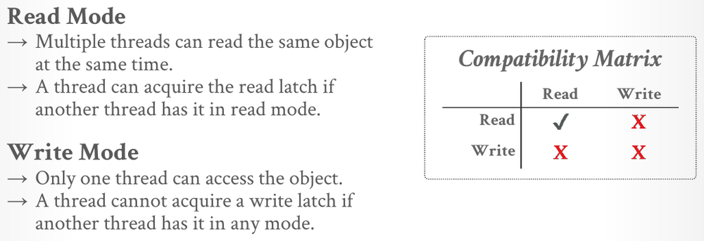
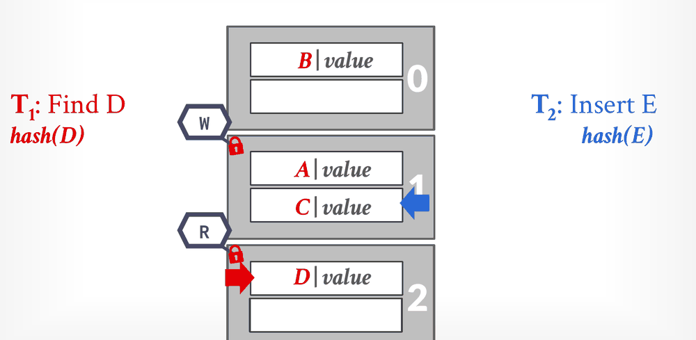

Database Internals in Go · Unit 3 · Lesson 7
Latches: Locks vs. Latches and Hash Table Latching
Tell latches from locks, compare spin latches, blocking mutexes and reader-writer latches and map each to Go's sync and sync/atomic, and explain why a hash table can be latched without any risk of deadlock.
Every structure in this unit so far assumed one thread at a time. A real DBMS runs many threads at once, to use all its CPU cores and to keep working while some of them wait for the disk. You have already made one structure safe for that: Project 1's buffer pool, with its pool latch, its frame latches and its rule about the order in which to take them. Lecture #10 first looks at latches themselves, how they are built and what each design costs, and then latches a hash table. The next lesson does the same for the B+tree, which is harder.
Unit 2, Lesson 6: a page guard's Drop releases the frame latch first and unpins the page second. Why that order?
Lesson 2: a linear hash table's split pointer is at bucket 1, and a key overflows bucket 3. Which bucket splits?
Unit 1, Lesson 2: in a slotted page, the slot array grows from the front of the page and the tuple data from the back. When is the page full?
Correctness, for many threads
Lecture #10 opens with the problem. A modern DBMS needs many threads to use additional CPU cores and to hide disk I/O stalls, so its data structures must be safe for several threads at once. A few systems stay single-threaded on purpose; the notes name Redis. The notes also mention the easy fix, one reader-writer latch around the whole structure, and reject it as inefficient: it allows only one writer in the entire structure at a time.
A concurrency control protocol is how the DBMS ensures correct results for concurrent operations on a shared object. The slide separates two kinds of correctness. Logical correctness asks whether a thread sees the data it is supposed to see; for example, a thread should read back a value it wrote. Physical correctness asks whether the object's internal representation is sound, for example that no pointer leads a thread to an invalid memory location. This lesson and the next are about physical correctness only. Logical correctness comes back with transactions in Unit 7.
Locks and latches, side by side
Unit 2, Lesson 1 drew the line between locks and latches. Lecture #10 adds Goetz Graefe's fuller comparison:
| Locks | Latches | |
|---|---|---|
| Separate | transactions | workers (threads, processes) |
| Protect | database contents | in-memory data structures |
| During | entire transactions | critical sections |
| Modes | shared, exclusive, update, intention | read, write |
| Deadlock | detection and resolution | avoidance |
| …by | waits-for graphs, timeouts, aborts | coding discipline |
| Kept in | the lock manager | the protected data structure |
The deadlock rows matter most for this unit. A lock manager watches every lock and can find a cycle of waiting transactions and abort one of them. Nothing watches latches, and the notes say it is the worker's responsibility to avoid deadlocks. You did exactly that in Project 1, where a fixed lock order (frame latch first, pool latch second) made a cycle impossible. A worker is the lecture's word for anything that runs DBMS code concurrently: a thread, a process, or in this course a goroutine.
#10 Latching in Data Structures, "Locks versus latches" (5:51), slides 7–8: the comparison above, and why latch deadlocks are the programmer's problem.
Latch modes
A latch has two modes. In read mode, several threads can hold the latch at the same time, so a thread can acquire it in read mode while others hold it in read mode. In write mode, only one thread can hold it, and a thread can't acquire it in write mode while anyone holds it in any mode.

In Go, these are sync.RWMutex's two halves: RLock and RUnlock for read mode, Lock and Unlock for write mode. Project 1's FrameHeader.rwlatch is one, and a ReadPageGuard or WritePageGuard holds it in read or write mode.
What a good latch looks like
Slide 10 sets four goals for a latch implementation: a small memory footprint, a fast execution path when there is no contention, decentralized management of latches, and no expensive system calls. A DBMS may have a latch on every page or even on every slot, so a latch has to be small and, in the common case, nearly free. The slide quotes Linus Torvalds on the subject: "do not use spinlocks in user space, unless you actually know what you're doing".
Go's mutexes meet the first two goals. On 64-bit Linux a sync.Mutex takes 8 bytes and a sync.RWMutex 24 (you can check with unsafe.Sizeof). Locking an uncontended sync.Mutex is a single atomic compare-and-swap; the Go source labels it the fast path.
Spin latches and compare-and-swap
All latch implementations rest on atomic instructions, which read and update a memory location in one step that no other thread can interrupt. The most important is compare-and-swap (CAS): compare the contents of memory location M with a value V; if they are equal, install a new value V′ in M, and otherwise fail. The slide's example is __sync_bool_compare_and_swap(&M, 20, 30): M holds 20, so M becomes 30 and the call reports success. In Go, CAS is a method on the types in sync/atomic, such as atomic.Int64.CompareAndSwap(old, new), which returns whether it swapped.
The simplest latch built on it is a test-and-set spin latch: a flag in memory that a thread tries to change from "free" to "held" with one atomic instruction, retrying until it succeeds. The slide's version uses C++'s std::atomic_flag:
std::atomic_flag latch;
while (latch.test_and_set(…)) {
// Retry? Yield? Abort?
}Latching and unlatching cost a single instruction each, which is very efficient. The comment in the loop is the DBMS's choice: when the latch is taken, it decides whether to retry, to give up the CPU or to abort the operation. With a blocking mutex, that choice belongs to the operating system. The drawbacks: a spin latch doesn't scale, it isn't cache friendly and it isn't OS friendly. Under contention, many threads repeat the same failing instruction, look busy to the OS while doing no useful work, and keep pulling the latch's cache line between cores. The notes add that on a machine with non-uniform memory access, polling a latch that lives in another CPU's memory is especially expensive.
Blocking OS mutexes
A blocking mutex puts a waiting thread to sleep instead of spinning. The slide's example is std::mutex, which on Linux is a pthread_mutex_t built on a futex (fast userspace mutex). A futex is two latches that look like one: a spin latch in user space, tried first, and an OS-level mutex behind it. If the userspace latch is taken, the thread goes into the kernel to try the second one, and if that fails too, the OS deschedules the thread and wakes it when the mutex is free. It is simple to use but doesn't scale: about 25 ns per lock and unlock, because the OS does its own bookkeeping, with its own latching, to decide which threads sleep and which wake. The notes conclude that an OS mutex is generally a bad idea inside a DBMS.
Go's sync.Mutex follows the same plan with the Go runtime in place of the kernel. After the fast-path CAS fails, a goroutine may spin a few times, and then it is parked by the Go scheduler, not by the OS, until the mutex is released. Its source comments describe a fairness rule as well: a waiter that has failed to get the mutex for more than 1 ms switches it to a starvation mode, in which the mutex is handed straight to the waiter at the front of the queue.
Reader-writer latches
Spin latches and plain mutexes have one mode. A reader-writer latch adds read mode, so that readers can share. It keeps track of how many threads hold the latch in each mode and how many wait in each mode, and it is built on top of one of the simpler latches. The slide's example is std::shared_mutex, which is pthread_rwlock_t, itself built from a pthread_mutex_t and a pthread_cond_t.
![Approach 3: Reader-Writer Latches. Allows for concurrent readers; must manage read/write queues to avoid starvation; can be implemented on top of spinlocks; example std::shared_mutex, built on pthread_rwlock_t, which uses pthread_mutex_t and pthread_cond_t. Below, a box labelled Latch holds a red read lock and a black write lock. Two CPUs with red lock icons hold the read lock, and a third CPU with an hourglass waits to the left of them. A CPU on the right with an hourglass waits for the write lock. Counters under read show 2 holders and 1 waiting; under write, 0 holders and 1 waiting.](../assets/slides/L10-rw-latch-queues-p28.png)
The slide's point is that a reader-writer latch must manage its queues to avoid starvation. The notes add that implementations disagree on how: there are reader-preferred, writer-preferred and fair reader-writer latches, and the behavior differs between operating systems and pthread implementations. Before relying on one, look up the policy of the latch you use.
Go documents its policy. From sync.RWMutex's doc comment: "If any goroutine calls RWMutex.Lock while the lock is already held by one or more readers, concurrent calls to RWMutex.RLock will block until the writer has acquired (and released) the lock". That is the slide's picture. The same comment draws the consequence: this "prohibits recursive read-locking". A goroutine that holds a read latch and asks for the same read latch again can block behind a waiting writer, while the writer waits for the first read latch to be released. The Project 2 writeup gives the same warning in its own words: "You should never acquire the same read latch twice in a single thread. It might lead to deadlock." The comment adds that an RLock can't be upgraded into a Lock, which matters in the next lesson.
#10 Latching in Data Structures, "OS mutex implementation" (24:33), slides 14–15: the futex inside std::mutex, then reader-writer latches and the queue build in the figure.
Latching a hash table
Slide 16 says a static hash table is easy to make concurrent, because threads can use it in only a few ways. Every thread moves through the slots in the same direction, and touches only one page or slot at a time. With nothing held while waiting for something else, no cycle of waits can form, so deadlocks are not possible. Resizing is the exception: the thread that resizes takes a single write latch on the whole table, for example in its header page. The notes add that dynamic schemes such as extendible hashing follow the same approach, with more shared state to update.
Slide 17 lists three granularities:
- A global latch: one latch protects the entire structure. It is simple, and it allows only one writer in the table at a time.
- Page or block latches: each page has its own reader-writer latch, and a thread takes it before it touches the page and releases it before it moves on to the next page.
- Slot latches: each slot has its own latch. To cut the metadata and the computation, it can be a single-mode latch, such as a spin latch.

Page latches give less parallelism, since only one writer can be in a page at a time, but a thread that scans several slots of one page takes only one latch. Slot latches let two threads work on different slots of the same page, at the cost of a latch per slot in storage and a latch operation for every slot a thread touches. In the slide's slot-latch build, T1 reads slot D while T2 writes slot E on the same page.
The notes describe a third option with no latches at all. In a latch-free linear-probe table, an insert uses CAS to replace a special "null" value in a slot with its entry. If the CAS fails, another thread took the slot first, and the insert probes the next slot.
#10 Latching in Data Structures, "Hash table latching" (32:24), slides 16–19: why hash tables can't deadlock, and the page-latch and slot-latch builds step by step.
Why the B+tree is harder
A hash-table thread releases one page's latch before it takes the next. A B+tree thread can't do that safely. While it moves from a parent to a child, another thread might split or merge that child and move the key it is looking for. And an insert or delete may have to change the parent too, if the child splits or merges. B+tree operations therefore hold more than one latch at a time, and that is the problem the next lesson solves.
Work it out
-
What to think about
Which mode does each thread need? Read and write are incompatible, so who waits for whom on page 1? And what does the rule "release before moving to the next page" say each thread holds while it walks to page 2?
The method
T1 needs read latches, T2 write latches. Go page by page: T1 on page 1, then page 2; T2 on page 1 only after T1 leaves, then page 2. Note what T2 does when it arrives at page 2 while T1 is still reading there.
The result
T1 R-latches page 1; T2 waits for a W latch on page 1. T1 finds no D, releases page 1 and R-latches page 2. T2 W-latches page 1, finds it full, releases it and waits for a W latch on page 2. T1 finds D and releases page 2. T2 W-latches page 2 and inserts E. At no point does either thread hold two latches, which is why no deadlock is possible.
-
What to think about
Lock has to change the flag from false to true in one atomic step, and keep trying while another goroutine holds it. What should a goroutine do between attempts, given the slide's "Retry? Yield? Abort?"?
The approach
Loop on
CompareAndSwap(false, true)until it returns true, yielding the processor withruntime.Gosched()after each failure. Unlock stores false. Wrap the counter increment between Lock and Unlock, wait for the goroutines with async.WaitGroup, and print the counter.One key fragment
for !l.held.CompareAndSwap(false, true) { runtime.Gosched() // the slide's "Yield?" }The program prints 80000 and the race detector reports nothing: the atomic operations order the counter's accesses. Make the flag a plain
boolthat Lock checks and then sets, and-racereports a data race.
Check your understanding
Which statement is true of latches but not of locks?
M is an atomic.Int64 holding 20. A goroutine calls M.CompareAndSwap(25, 30). What happens?
In Lecture #10's reader-writer latch build, two readers hold the latch and a writer is waiting. A third reader arrives. What does the slide show, and what do the notes say about such policies?
Why does Lecture #10 say deadlocks can't happen when threads latch the pages of a static linear-probe hash table?
Goroutine A holds rw.RLock() on a sync.RWMutex. Goroutine B calls rw.Lock() and blocks. Now A calls rw.RLock() again, before releasing its first read latch. What happens?
Primary sources: CMU 15-445/645 Fall 2025 Lecture #10 slides 4–19 and notes (sections 1–4); the Project #2 writeup (Task #4); the Go documentation for sync.RWMutex, sync.Mutex and sync/atomic, and the comments in Go 1.24's src/internal/sync/mutex.go.